Before visaulMill install rainbow the driver fiest.
Dongle not found
|
printer ---select protail(default)
import type: DXFE.dwg, igs not iges, obj measure/part bounding box/check the length(x,y and z)of the geometry from the information bar. |
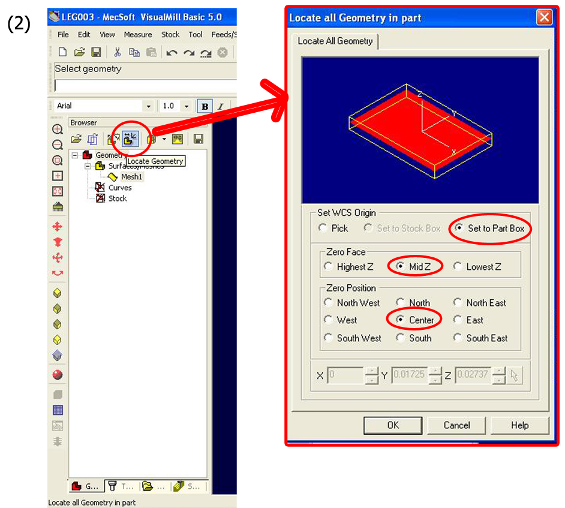
geometry (set part box) 1,setWCSorigin/set it to PartBox. 2, zeroFace/MidZ. 3, zero/Center.
|
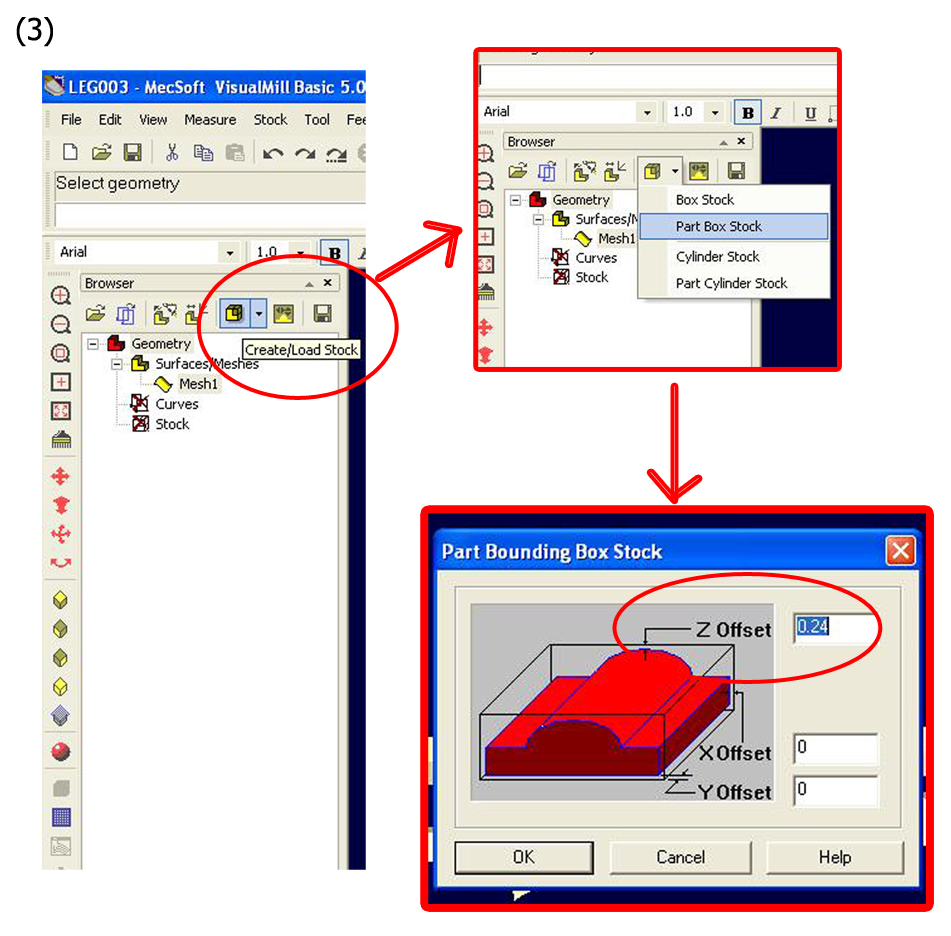
For example: 2" stock - 1.76" = 0.24". |
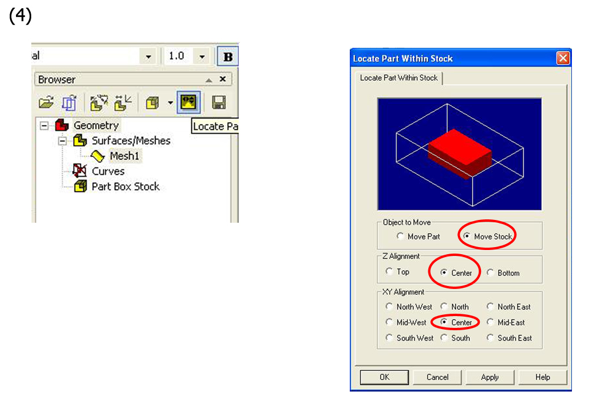
set stock 1, move stock. 2, Z aligment - center. 3,xy aligment - center. |
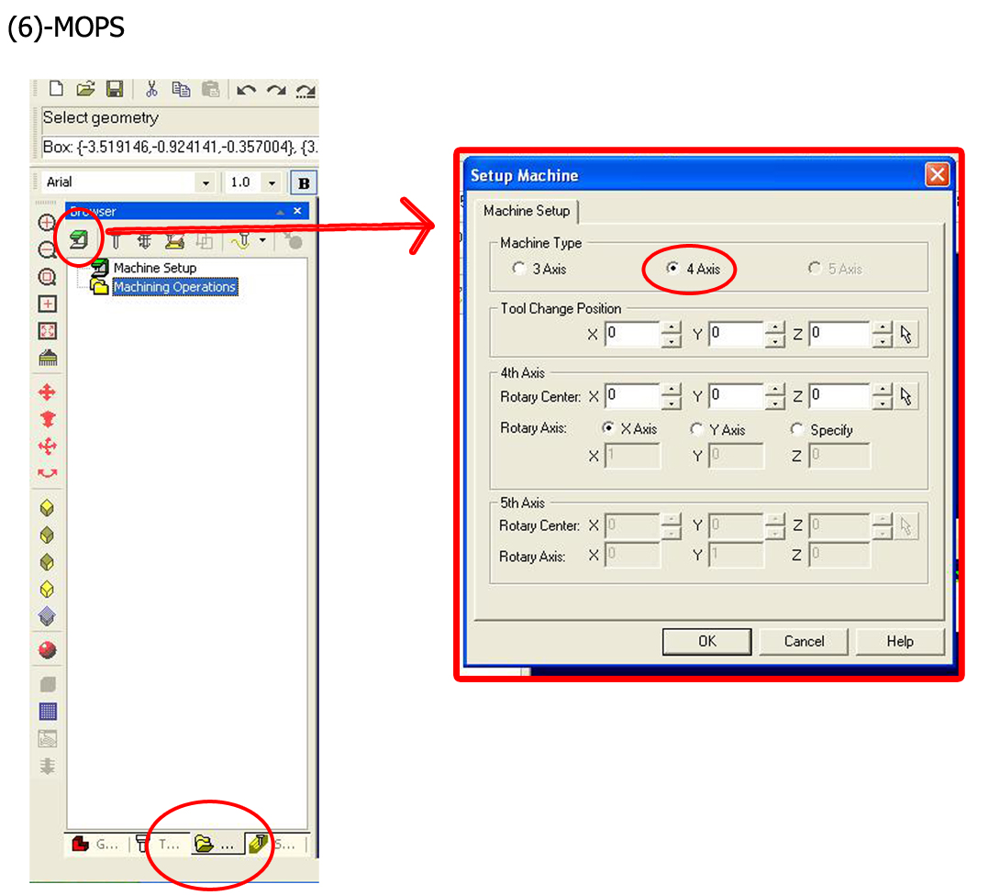
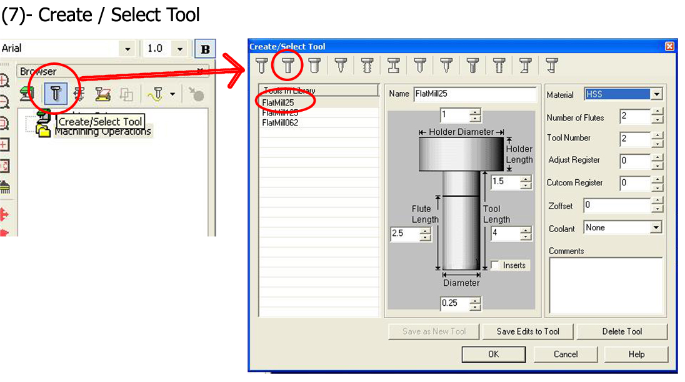
rough cutting/ using flatMill25. mm to inch convert 8 mm = .31496 inch |
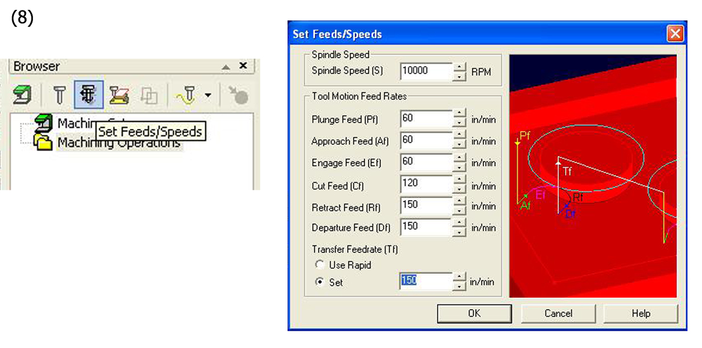
this is example of soft materials milling speed setting. for wood or hard surface material should use adjust the speed to : S:8000 PF: 60 AF: 55 EF: 50 CF: 70 RF: 75 DF: 85 TF: set it to 85 for all speed limit is 150 |
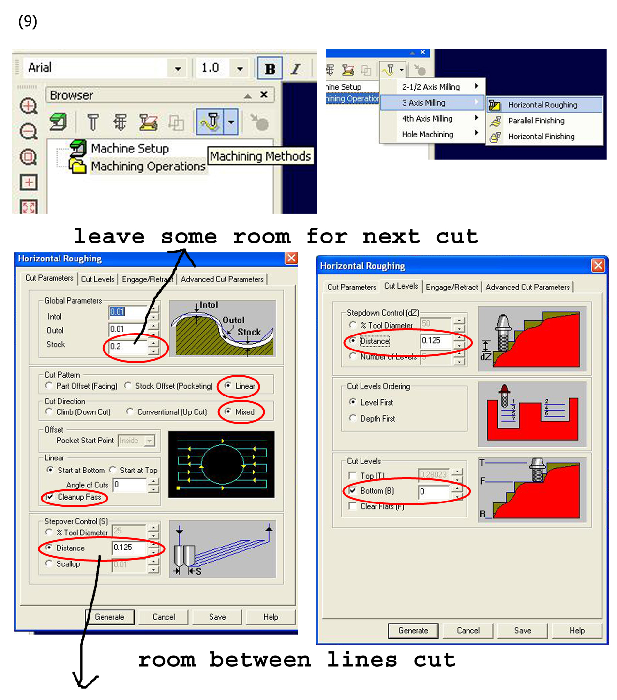
stepover: leave some space for parallel/horiaontalFinishing.(soft(board) : 0.25 hard(wood): 0.1). stepdown: 0.125 for horizontalRoughing and 0.008 for parallel/horiaontalFinishing. |
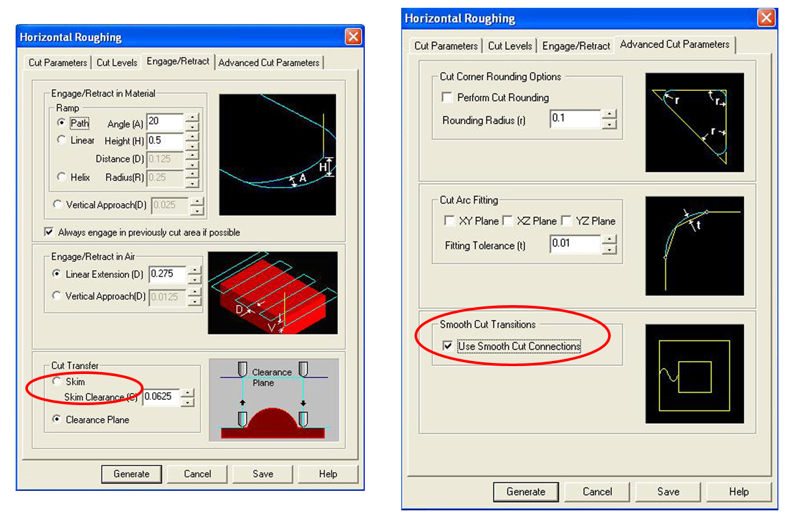
use engageRetract/skim clearance--- to lift the tool up (0.3)away from the stock and keep cutting the next line(save some time). engageRetract/clearancePlane----to lift the tool to the top-end and cut the next line. |
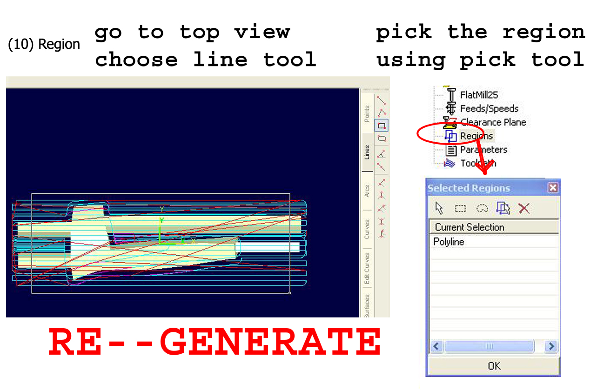
cutting o words need to select two polyLines at same time. checking the grid for the stock size and make sure the is enough space for cutting to avoid hitting the stock or machine causing the demage. On the y axis's region should set bigger than stock and part size.This will avoid the stock being hit when the rotary make 180 degree rotation. |
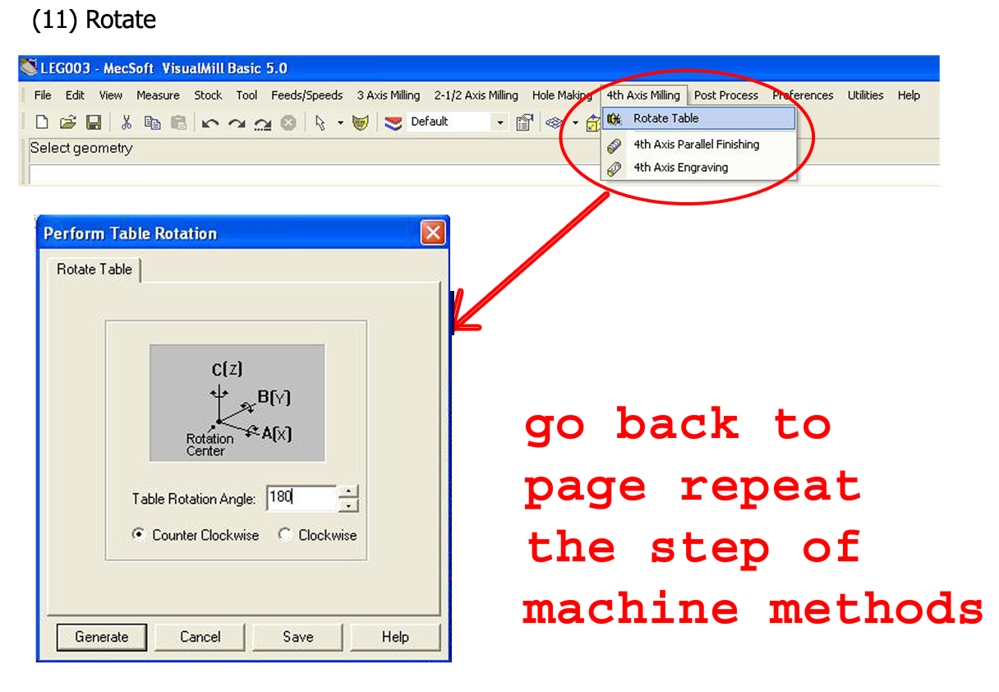
after set 180 rotation, repeat the last step of MOPS(machine methods to cut another half of geometry). also, we can have 0, 90,180 and 270 rotations for 4 cuts to finishing the head sculpture at once. 4 axis parallelFinishinf is for 4 axis cylinder milling use and with out setting the rotation angles. |
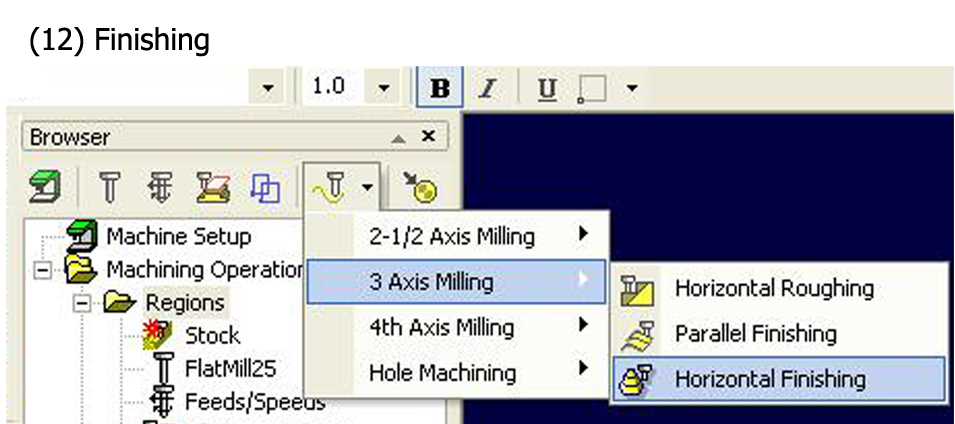
| 3 axis Milling/parallel finishing is fast way having the detail milling. |
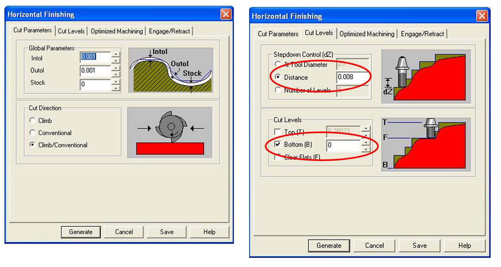
| cutLevel/stepDown control should match the horizontalRoghing's setting too. |
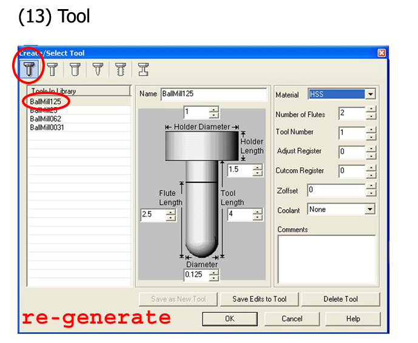
tool: BallMill 125 for horizontal/parallel finishing. rotate back to 0 and repeat parallelFinishing. check all views. |
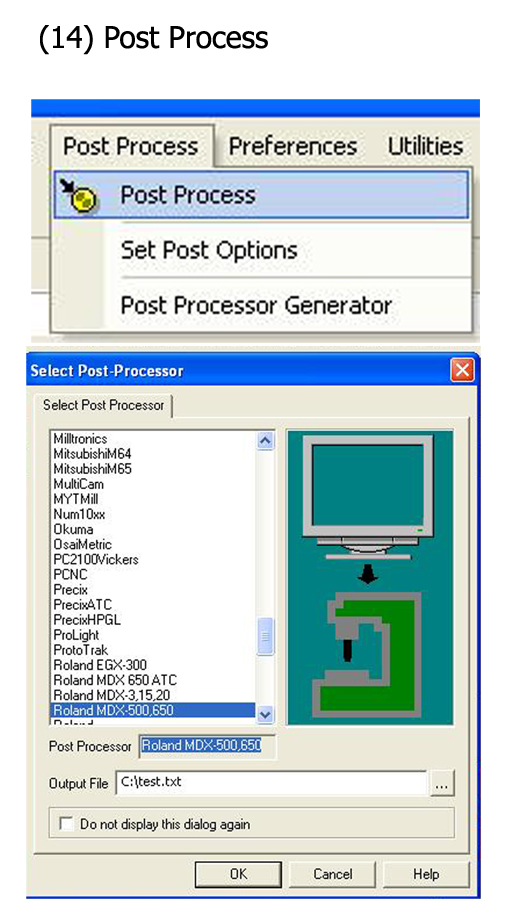
***** remember to set the postprocces/driver to RolandCamm-GL( 4 axis parallel rotation must use). There is problem of Roland MDX650 driver for using the 4 axis paralle rotation(not rotating 360 degree). shift select all the proccesses. outputing(write) the file after submit to postProccess mothod. |
machine notes:
1, speedCuttig.
2,spider, rpm-1200
3,MECHAMoving
1, go to orgin pose--- last setting.
2, go to zo pose --- move the object.
3, view pose---- see the milling.
5, moving mode--- on -- contineu(can adjust the speed when mahine is cutting).
6, command-- auto.
4, orgin change----- user,center and limit.
12, rotation.
1,rotate
2,center mode--must reset the orgin after the changing tool.
3, reset X pose
4, X center mode.
set xya orign:
normally, x axiz and a rotary centers haver been set already(do not touch).
1,make sure rotary is in the original position.
2,jog the key to X axiz.
2,adjust the X axiz to the center of the stock and press the enter key to set the X orgin.
set z region:
1,change tool(need to change the drill's clam too to fit smaller drill).
2,go to 3 (1,go original position)and open the censor.
3,move x and z axizs and get close to the sensor.
3,go to 12 rotary control(2, z enter mode please cursor move) and press enter.
4,touch the drill to the sensor in z axiz to reset the z center too the smaller tool.